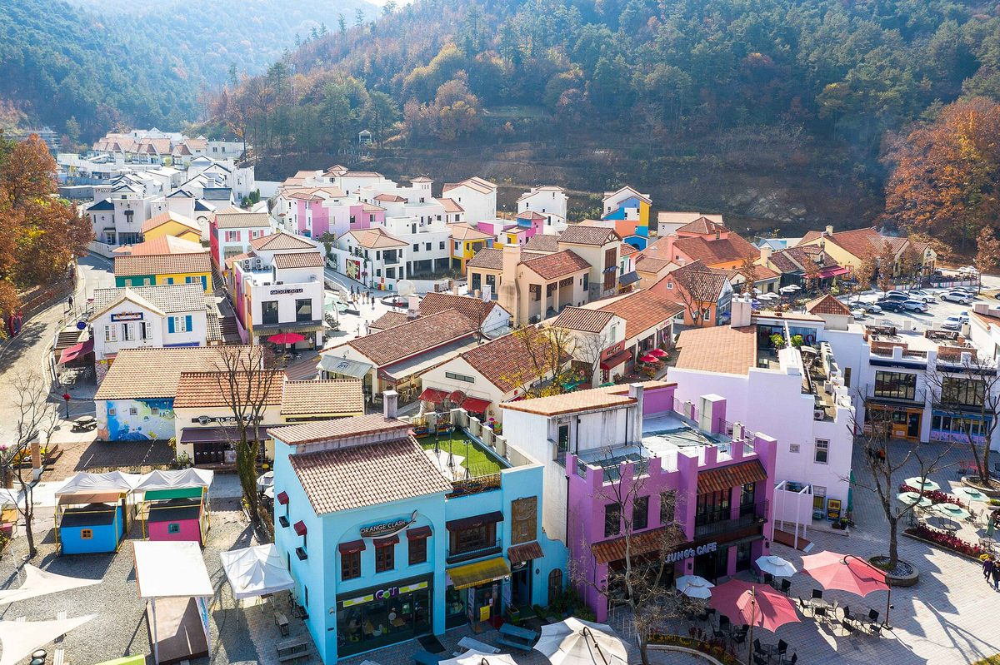

대통령비서실·관계부처, 담양 햇빛소득마을서 현장간담회…전남광주, 전국 최다 126곳 선정에도 조건부 많아 ESS 설치비 부담 완화 등 건의

전국 선정 523곳의 약 24%가 전남광주…계통·부지·자금 보완 필요한 마을 많아 지자체 기준인력 배정·통합관리 플랫폼 구축도 요청, 정부 답변은 알려지지 않아
대통령비서실과 행정안전부·기후에너지환경부 관계자들이 27일 전남 담양의 햇빛소득마을을 찾아 전남광주통합특별시와 현장간담회를 열고, 공모에 뽑히고도 사업을 시작하지 못한 마을들이 겪는 전력계통·부지·자금 문제를 놓고 개선 방안을 논의했다. 이 자리에는 대통령비서실 배진교 국민경청비서관·이영수 농림축산비서관·이유진 기후에너지비서관, 남호성 행정안전부 햇빛소득마을추진단장, 이경수 기후에너지환경부 재생에너지정책관과 백승주 전남광주통합특별시 균형발전부시장, 박종원 담양군수, 한국전력·한국에너지공단 관계자가 함께했으며, 간담회가 열린 마을의 이름과 사업 규모는 공개되지 않았다. 전남광주는 해마다 100개 마을 조성을 목표로 녹색에너지연구원·시군과 민관합동 현장지원단을 꾸려 맞춤형 컨설팅을 해 왔고, 행안부 1·2차 공모에서 전국 선정 마을 523곳의 약 24%인 126곳이 뽑혀 전국에서 가장 많았다. 그러나 선정 마을 상당수가 계통·부지·자금을 보완해야 하는 조건부 선정이어서, 시는 이날 에너지저장장치(ESS) 설치비의 지방자치단체 부담 완화, 지자체 기준인력 배정, 햇빛소득마을 통합관리 플랫폼 구축 등 세 가지 제도개선을 건의했다. 백 부시장은 실제 주민소득으로 이어지기까지 풀 과제가 많다며 계통·부지·자금 문제를 "전국이 함께 풀어야 할 과제"라고 말했지만, 정부 쪽이 내놓은 답변이나 지원 약속은 전해지지 않았다. 같은 비서관들과 추진단장은 이날 오후 전북 익산 여산면 햇빛소득마을을 찾는 일정도 잡혀 있었다.
시민에너지 관점
전국 선정 마을 523곳 가운데 4분의 1을 가진 지역에서조차 상당수가 조건부라는 것은, 햇빛소득마을의 병목이 마을의 의지가 아니라 계통·자금·행정 역량에 있다는 뜻이다. 덴마크는 2009년부터 2020년까지 새 육상풍력 사업 지분의 20% 이상을 지역 주민에게 먼저 내놓도록 법으로 정해, 주민 몫을 사업자의 선의가 아니라 제도의 기본값으로 만들었다. 선정 숫자만 늘리고 ESS 비용과 행정 인력을 마을과 지자체에 떠넘기면 결국 자금력 있는 외부 사업자에게 자리를 내주게 될 것이라는 우려가 나올 수 있고, 그래서 더더욱 주민이 주인으로 남을 수 있도록 국가가 계통과 저장장치 비용을 맡아야 한다. 3차 공모 결과를 더하기 전에, 이미 뽑힌 조건부 마을이 실제로 착공할 수 있도록 계통 접속과 ESS 지원 기준부터 정부가 내놓아야 한다.
출처: 뉴스깜 2026-10-27 김필수 원문 보기
大統領秘書室・関係省庁、潭陽の日差し所得村で現場懇談会…全南光州、全国最多126カ所選定も条件付きが多くESS設置費の負担軽減など建議
全国選定523カ所の約24%が全南光州…系統・用地・資金の補完が必要な村が多く自治体の基準人員配置・統合管理プラットフォーム構築も要請、政府の回答は伝えられず
大統領秘書室と行政安全部・気候エネルギー環境部の関係者が27日、全羅南道潭陽（タミャン）の日差し所得村（ヘッビッ・ソドゥク・マウル）を訪れて全南光州統合特別市と現場懇談会を開き、公募に選ばれながら事業に着手できずにいる村が抱える電力系統・用地・資金の問題について改善策を話し合った。懇談会には大統領秘書室のペ・ジンギョ国民傾聴秘書官、イ・ヨンス農林畜産秘書官、イ・ユジン気候エネルギー秘書官、ナム・ホソン行政安全部日差し所得村推進団長、イ・ギョンス気候エネルギー環境部再生エネルギー政策官と、ペク・スンジュ全南光州統合特別市均衡発展副市長、パク・ジョンウォン潭陽郡守、韓国電力・韓国エネルギー公団の関係者が出席し、懇談会が開かれた村の名前と事業規模は公表されなかった。全南光州は毎年100の村の造成を目標に、緑色エネルギー研究院や市郡と官民合同の現場支援団をつくり村ごとのコンサルティングを行ってきており、行政安全部の第1・2次公募では全国の選定村523カ所の約24%にあたる126カ所が選ばれ、全国で最も多かった。しかし選定村の多くは系統・用地・資金の補完を条件とする条件付き選定で、市はこの日、エネルギー貯蔵装置（ESS）設置費の地方自治体負担の軽減、自治体への基準人員の配置、日差し所得村統合管理プラットフォームの構築という三つの制度改善を建議した。ペク副市長は実際の住民所得につなげるまでには課題が多いとして、系統・用地・資金の問題は「全国が共に解くべき課題」だと述べたが、政府側の回答や支援の約束は伝えられていない。同じ秘書官らと推進団長は、この日午後に全羅北道益山（イクサン）市礪山面の日差し所得村を訪れる日程も組まれていた。
市民エネルギーの視点
全国の選定村523カ所の4分の1を抱える地域でさえ多くが条件付きだということは、日差し所得村のボトルネックが村の意欲ではなく、系統・資金・行政の力量にあることを意味する。デンマークは2009年から2020年まで、新しい陸上風力事業の持ち分の20%以上をまず地域住民に提供するよう法律で定め、住民の取り分を事業者の善意ではなく制度の初期設定にした。選定数だけを増やしてESSの費用や行政の人手を村と自治体に押し付ければ、結局は資金力のある外部事業者に席を譲ることになるという懸念も出かねず、だからこそ住民が持ち主であり続けられるよう、国が系統と蓄電設備の費用を担うべきだ。第3次公募の結果を上乗せする前に、すでに選ばれた条件付きの村が実際に着工できるよう、政府はまず系統接続とESS支援の基準を示さなければならない。
出典: ニュースカム（Newsggam） 2026-10-27 キム・ピルス 原文を読む
总统秘书室与相关部门在潭阳阳光收入村举行现场座谈…全南光州入选数全国最多达126个，但多为附条件入选，建议减轻ESS安装费负担等
全国523个入选村约24%在全南光州…不少村需补足电网、用地和资金条件，并要求向地方政府配置基准人力、建设统一管理平台，政府回应尚未披露
总统秘书室和行政安全部、气候能源环境部相关人员27日走访全罗南道潭阳的阳光收入村，与全南光州统合特别市举行现场座谈会，就已在公开征集中入选却迟迟无法开工的村庄所面临的电网、用地和资金问题讨论改进方案。出席座谈会的有总统秘书室国民倾听秘书官Bae Jin-gyo、农林畜产秘书官Lee Young-soo、气候能源秘书官Lee Yu-jin，行政安全部阳光收入村推进团团长Nam Ho-seong，气候能源环境部可再生能源政策官Lee Kyung-soo，以及全南光州统合特别市均衡发展副市长Baek Seung-ju、潭阳郡守Park Jong-won和韩国电力公社、韩国能源公团相关人员；举行座谈会的村庄名称和项目规模未予公开。全南光州以每年建设100个村为目标，与绿色能源研究院及各市郡组建官民联合现场支援团提供定制咨询，在行政安全部第1、2轮征集中有126个村入选，约占全国523个入选村的24%，居全国之首。但入选村中相当一部分属于须补足电网、用地和资金条件的附条件入选，该市当天提出三项制度改进建议：减轻地方政府承担的储能装置（ESS）安装费，向地方政府配置基准人力，以及建设阳光收入村统一管理平台。Baek副市长表示，要真正转化为居民收入仍有许多课题，并称电网、用地和资金问题是"全国需要共同解决的课题"，但政府方面的答复或支持承诺尚未见报道。同一批秘书官和推进团团长当天下午还安排了走访全罗北道益山市砺山面阳光收入村的行程。
市民能源视角
即便在拥有全国523个入选村四分之一的地区，也有大量村庄属于附条件入选，这说明阳光收入村的瓶颈不在于村民意愿，而在于电网、资金和行政能力。丹麦在2009年至2020年间以法律规定，新建陆上风电项目须先向当地居民提供至少20%的股份，把居民份额从开发商的善意变成制度的默认设置。若只增加入选数量，却把ESS费用和行政人手推给村庄和地方政府，难免令人担心最终会让位给资金雄厚的外部开发商，正因如此，国家更应承担电网和储能设备的费用，让居民始终是主人。在叠加第3轮征集结果之前，政府应先拿出电网接入和ESS支持标准，让已入选的附条件村庄真正开工。
来源: Newsggam 2026-10-27 Kim Pil-su 查看原文
Presidential secretariat and ministries hold on-site meeting at Damyang sunlight income village; Jeonnam-Gwangju, with a national-high 126 villages selected but many only conditionally, seeks relief on ESS costs
About 24% of the 523 villages selected nationwide are in Jeonnam-Gwangju; with many needing grid, land and financing fixes, the city also asked for local staffing standards and an integrated management platform, while no government response has been reported
Officials from the Presidential Secretariat, the Ministry of the Interior and Safety and the Ministry of Climate, Energy and Environment visited a sunlight income village in Damyang, South Jeolla, on the 27th and held an on-site meeting with Jeonnam-Gwangju Integrated Special City on how to fix the grid, land and financing problems holding back villages that were selected in the government's competition but have yet to start work. Attendees included Presidential Secretariat secretaries Bae Jin-gyo (public listening), Lee Young-soo (agriculture, forestry and livestock) and Lee Yu-jin (climate and energy), Nam Ho-seong, head of the interior ministry's sunlight income village task force, Lee Kyung-soo, director for renewable energy policy at the climate ministry, Baek Seung-ju, the city's vice mayor for balanced development, Damyang County Governor Park Jong-won, and officials from KEPCO and the Korea Energy Agency; the name of the host village and the size of its project were not disclosed. Jeonnam-Gwangju, which aims to create 100 such villages a year, has run a public-private field support team with the Green Energy Institute and its cities and counties to give villages tailored consulting, and in the interior ministry's first and second rounds 126 of its villages were chosen, about 24% of the 523 selected nationwide and the most of any region. Many of them, however, were selected only on condition that they resolve grid, land or financing gaps, and the city used the meeting to propose three institutional fixes: easing the share of energy storage system (ESS) installation costs borne by local governments, assigning standard staffing levels to local governments, and building an integrated management platform for the programme. Vice Mayor Baek said much remains to be done before the programme turns into real income for residents, calling grid, land and financing "challenges the whole country must solve together," but no reply or pledge of support from the government side has been reported. The same secretaries and the task force head were also scheduled to visit a sunlight income village in Yeosan-myeon, Iksan, North Jeolla, that afternoon.
Citizen Energy View
That many villages are only conditionally selected even in the region holding a quarter of the 523 chosen nationwide shows that the bottleneck lies not in villagers' willingness but in grid access, finance and administrative capacity. From 2009 to 2020 Denmark required by law that at least 20% of each new onshore wind project be offered first to local residents, making a local stake a default of the system rather than a developer's goodwill. Some may fear that if the number of selections keeps rising while ESS costs and administrative work are pushed onto villages and local governments, the projects will end up with well-funded outside developers, which is exactly why the state should carry grid and storage costs so that residents remain the owners. Before adding the results of the third round, the government should first set out grid connection and ESS support rules so that villages already selected on conditions can actually break ground.
Source: Newsggam 2026-10-27 Kim Pil-su Read the original